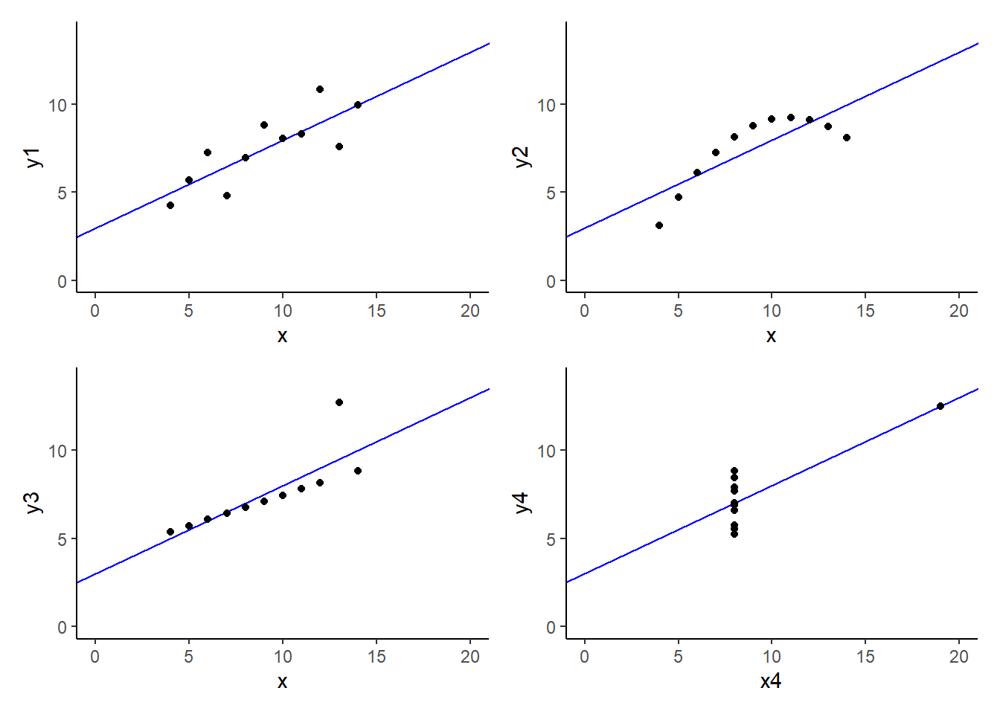
7 Dealing with Messy Data I: Case Analysis
7.1 Anscombe’s Quartet
Anscombe, Francis J. (1973) Graphs in statistical analysis. American Statistician, 27, 17–21.
Code
1broom::tidy(lm(y1 ~ x, data = Quartet))- 1
-
See Quartet dataframe in
carpackage.
# A tibble: 2 × 5
term estimate std.error statistic p.value
<chr> <dbl> <dbl> <dbl> <dbl>
1 (Intercept) 3.00 1.12 2.67 0.0257
2 x 0.500 0.118 4.24 0.00217SSE = 13.76
Code
broom::tidy(lm(y2 ~ x, data = Quartet))# A tibble: 2 × 5
term estimate std.error statistic p.value
<chr> <dbl> <dbl> <dbl> <dbl>
1 (Intercept) 3.00 1.13 2.67 0.0258
2 x 0.5 0.118 4.24 0.00218SSE = 13.78
Code
broom::tidy(lm(y3 ~ x, data = Quartet))# A tibble: 2 × 5
term estimate std.error statistic p.value
<chr> <dbl> <dbl> <dbl> <dbl>
1 (Intercept) 3.00 1.12 2.67 0.0256
2 x 0.500 0.118 4.24 0.00218SSE = 13.76
Code
broom::tidy(lm(y4 ~ x4, data = Quartet))# A tibble: 2 × 5
term estimate std.error statistic p.value
<chr> <dbl> <dbl> <dbl> <dbl>
1 (Intercept) 3.00 1.12 2.67 0.0256
2 x4 0.500 0.118 4.24 0.00216SSE = 13.74
7.2 Case Analysis
Goal is to identify any unusual or excessively influential data. These data points may either bias results and/or reduce power to detect effects (inflate standard errors and/or decrease \(R^2\)).
Three aspects of individual observations we attend to:
- Leverage
- Regression Outlier
- Influence
Case Analysis also provides an important first step as you get to know your data.
7.3 Case Analysis: Unusual and Influential Data
Code
library(tidyverse)
library(patchwork)
library(car)
theme_set(theme_classic())
data <- read_csv(here::here("data_lecture/7_three_predictors_fps.csv"),
show_col_types = FALSE) |>
glimpse()Rows: 96
Columns: 5
$ subid <chr> "0011", "0012", "0013", "0014", "0015", "0016", "0021", "0022", …
$ bac <dbl> 0.0000, 0.0000, 0.0000, 0.0000, 0.0000, 0.0000, 0.0000, 0.0000, …
$ ta <dbl> 208, 133, 120, 103, 97, 84, 34, 34, 296, 126, 200, 158, 26, 255,…
$ fps <dbl> 19.4909278, 48.4069444, -22.5285000, 6.7237833, 89.6587222, 40.5…
$ sex <chr> "female", "female", "female", "female", "female", "female", "fem…Notice sex is of character class type. We can’t use character stings in most of our analyes so we will want to handle character predictors immediately. For example, with our sex variable we could turn it into a factor, dummy code it, center it, or use any other contrast/combination of the above.
Code
data <- data |>
mutate(sex_c = if_else(sex == "female", -.5, .5),
sex = factor(sex,
levels = c("female", "male"))) |>
glimpse()Rows: 96
Columns: 6
$ subid <chr> "0011", "0012", "0013", "0014", "0015", "0016", "0021", "0022", …
$ bac <dbl> 0.0000, 0.0000, 0.0000, 0.0000, 0.0000, 0.0000, 0.0000, 0.0000, …
$ ta <dbl> 208, 133, 120, 103, 97, 84, 34, 34, 296, 126, 200, 158, 26, 255,…
$ fps <dbl> 19.4909278, 48.4069444, -22.5285000, 6.7237833, 89.6587222, 40.5…
$ sex <fct> female, female, female, female, female, female, female, female, …
$ sex_c <dbl> -0.5, -0.5, -0.5, -0.5, -0.5, -0.5, -0.5, -0.5, -0.5, -0.5, -0.5…Code
m_1 <- lm(fps ~ bac + ta + sex_c, data = data)
broom::tidy(m_1)# A tibble: 4 × 5
term estimate std.error statistic p.value
<chr> <dbl> <dbl> <dbl> <dbl>
1 (Intercept) 18.9 7.47 2.53 0.0132
2 bac -165. 84.6 -1.95 0.0545
3 ta 0.152 0.0316 4.82 0.00000570
4 sex_c -16.0 6.67 -2.40 0.0184 7.4 Univariate Statistics
Code
data |>
select(-subid, -sex) |>
pivot_longer(everything(), names_to = "var") |>
group_by(var) |>
summarize( n = n(),
mean = mean(value),
sd = sd(value),
min = min(value),
max = max(value)) |>
mutate(across(mean:max, ~round(.x, 2)))# A tibble: 4 × 6
var n mean sd min max
<chr> <int> <dbl> <dbl> <dbl> <dbl>
1 bac 96 0.06 0.04 0 0.14
2 fps 96 32.2 37.5 -98.1 163.
3 sex_c 96 0 0.5 -0.5 0.5
4 ta 96 148. 106. 10 445 7.5 Univariate Plots
Histograms are a useful/common visualization for numeric variables.
Here we have histograms with density as y-axis overlayed with density and rug plots (which you have seen earlier in the course!).
Code
plot_fps <- data |>
ggplot(aes(x = fps)) +
geom_histogram(aes(y = after_stat(density)),
color = "black", fill = "light grey", bins = 10) +
geom_density() +
scale_x_continuous(breaks = c(-100, -50, 0, 50, 100, 150, 200)) +
geom_rug(color = "red")
plot_bac <- data |>
ggplot(aes(x = bac)) +
geom_histogram(aes(y = after_stat(density)), boundary = 0,
color = "black", fill = "light grey", bins = 10) +
geom_density() +
geom_rug(color = "red")
plot_ta <- data |>
ggplot(aes(x = ta)) +
geom_histogram(aes(y = after_stat(density)), boundary = 0,
color = "black", fill = "light grey", bins = 10) +
geom_density() +
geom_rug(color = "red")
plot_sex <- data |>
ggplot(aes(x = sex_c)) +
geom_histogram(aes(y = after_stat(density)), boundary = 0,
color = "black", fill = "light grey", bins = 10) +
geom_density() +
geom_rug(color = "red")
(plot_fps + plot_bac) / (plot_ta + plot_sex)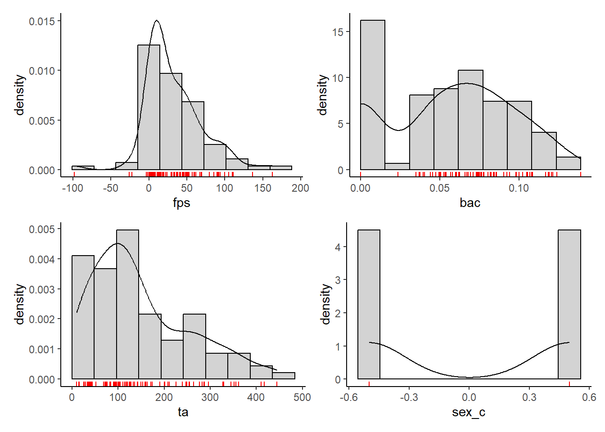
Box plots can also be a useful visualization tool for numeric variables.
Boxplots display:
- Median as line
- 25th %ile and 75th %ile as hinges
- Highest and lowest points within 1.5 * IQR (interquartile-range: difference between scores at 25th %ile and 75th %ile)
- Outliers outside of 1.5 * IQR
Code
box_fps <- data |>
ggplot(aes(x = fps)) +
geom_boxplot() +
theme(axis.text.y = element_blank(),
axis.ticks.y = element_blank(),
axis.text.x = element_text(angle = 90, vjust = 0.5, hjust = 1))
box_bac <- data |>
ggplot(aes(x = bac)) +
geom_boxplot() +
theme(axis.text.y = element_blank(),
axis.ticks.y = element_blank(),
axis.text.x = element_text(angle = 90, vjust = 0.5, hjust = 1))
box_ta <- data |>
ggplot(aes(x = ta)) +
geom_boxplot() +
theme(axis.text.y = element_blank(),
axis.ticks.y = element_blank(),
axis.text.x = element_text(angle = 90, vjust = 0.5, hjust = 1))Code
box_fps + box_bac + box_ta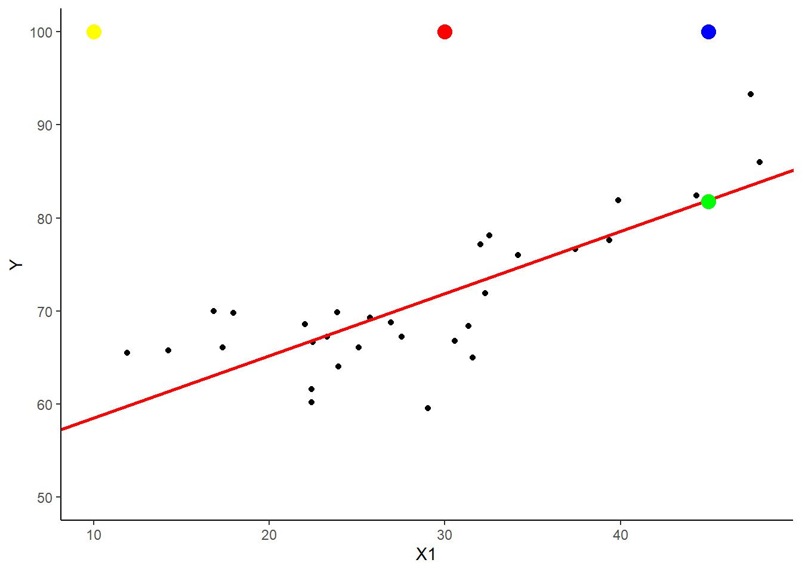
We could also overlay a violin plot over the box plot to clearly see the shape of the distribution and tails.
Code
(box_fps +
geom_violin(aes(y = 0), fill = "green", color = NA, alpha = .4) +
ylab(NULL)) +
(box_bac +
geom_violin(aes(y = 0), fill = "green", color = NA, alpha = .4) +
ylab(NULL)) +
(box_ta +
geom_violin(aes(y = 0), fill = "green", color = NA, alpha = .4) +
ylab(NULL)) 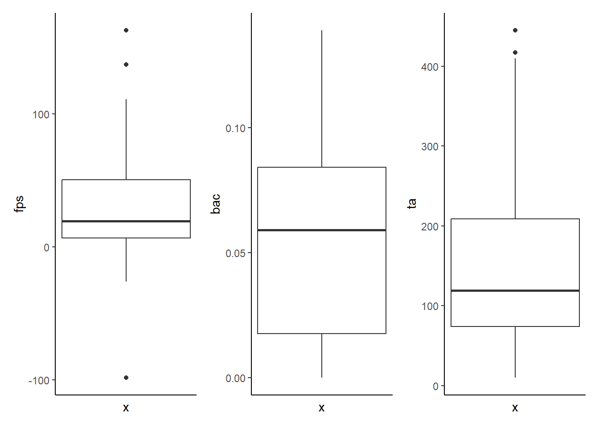
7.6 Bivariate Correlations
Code
data |>
select(-subid, -sex) |>
cor() |>
round(2) bac ta fps sex_c
bac 1.00 -0.02 -0.19 0.06
ta -0.02 1.00 0.44 -0.01
fps -0.19 0.44 1.00 -0.23
sex_c 0.06 -0.01 -0.23 1.007.7 Bivariate Plots (Numeric Predictor)
Scatterplots are the preferred visualization when both variables (i.e., the predictor and outcome) are numeric.
We also can add a simple line and a LOWESS line (Locally Weighted Scatterplot Smoothing) to help us consider the shape of the relationship.
Code
bivar_bac <- data |>
ggplot(aes(x = bac, y = fps)) +
geom_point() +
geom_smooth(method = "lm", formula = y ~ x, col = "red") +
geom_smooth(method = "loess", formula = y ~ x, col = "green") +
theme(axis.text.x = element_text(size = 11),
axis.text.y = element_text(size = 11))
bivar_ta <- data |>
ggplot(aes(x = ta, y = fps)) +
geom_point() +
geom_smooth(method = "lm", formula = y ~ x, col = "red") +
geom_smooth(method = "loess", formula = y ~ x, col = "green") +
theme(axis.text.x = element_text(size = 11),
axis.text.y = element_text(size = 11))
bivar_sex <- data |>
ggplot(aes(x = sex_c, y = fps)) +
geom_point() +
geom_smooth(method = "lm", formula = y ~ x, col = "red") +
theme(axis.text.x = element_text(size = 11),
axis.text.y = element_text(size = 11))Code
bivar_bac + bivar_ta + bivar_sex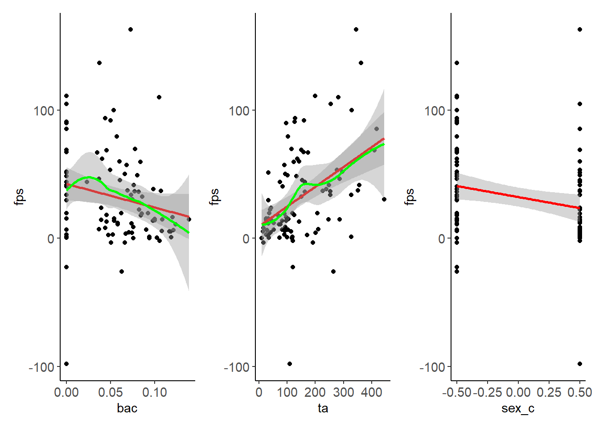
7.8 Bivariate Plots (Categorical Predictor)
A grouped version of the combined box and violin plot is our preferred visualization for relationship between categorical and numeric variables.
Lets look at an example of this with sex.
Code
data |>
ggplot(aes(x = sex, y = fps)) +
geom_violin(fill = "green", color = NA) +
geom_boxplot(width = .1, fill = NA, lwd = 1.1, fatten = 1.1) +
theme(axis.text.x = element_text(angle = 90,
vjust = 0.5, hjust = 1),
axis.text.y = element_text(size = 11))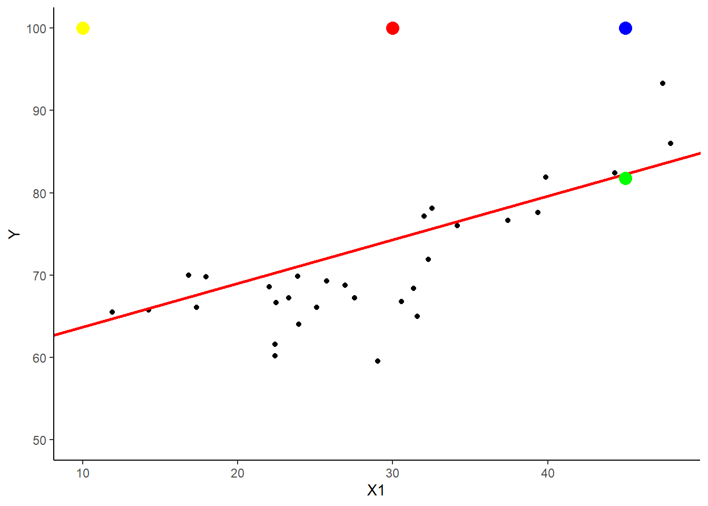
7.9 Leverage (Cartoon Data)
Check for high Leverage points
Leverage is a property of the predictors (DV is not considered for leverage analysis). An observation will have increased leverage on the results as its distance from the mean of all predictors increases.
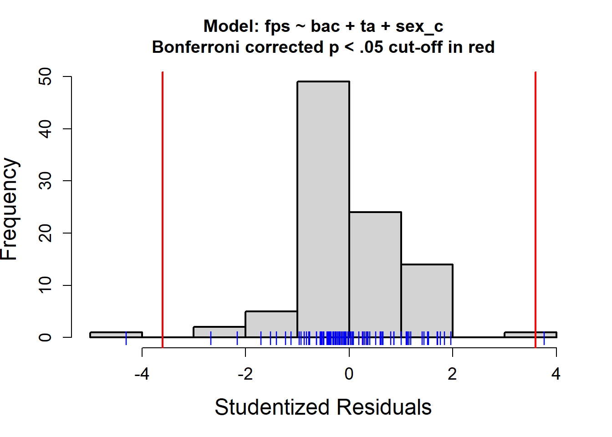
Question: Which colored points have the most leverage in the 1 predictor example above?
7.10 Leverage
Hat values (\(h_i\)) provide an index of leverage.
In the one predictor case:
\(h_i = \frac{1}{N} + \frac{(X_i- \overline X)^2}{\sum(X_j- \overline X)^2}\) (for \(j=1\) to \(N\) in summation)
With multiple predictors, \(h_i\) measures the distance from the centroid (point of means) of the \(X\)s. Hat values are bounded between \(\frac{1}{N}\) and 1.
Mean Hat value = \(\frac{P}{N}\).
Rules of thumb:
- \(h_i > 3* \overline h\) for small samples (\(N < 100\))
- \(h_i > 2* \overline h\) for large samples
Do not blindly apply rules of thumb. Hat values should be separated from distribution of \(h_i\). View a histogram of \(h_i\).
Note: Mahalanobis (Maha) distance = \((N - 1)(h_i - \frac{1}{N})\).
SPSS reports centered leverage (\(h - \frac{1}{N}\)).
7.11 Leverage (Cartoon Data; Continued)
High leverage values are not always bad. In fact, in some cases they are good. Must also consider if they are regression outliers.
Question: Why?
\(R^2 = \frac{\text{SSE}_{\text{mean-only}}- \text{SSE}_a}{\text{SSE}_{\text{mean-only}}}\)
\(\text{SE}_{bi} = \frac{s_y}{s_i} = \frac{\sqrt{(1-R^2_y)}}{\sqrt{(N - k - 1)}}*\frac{1}{\sqrt{(1-R^2_i)}}\)
High leverage points that are fit well by the model increase the difference between \(\text{SSE}_{\text{mean-only}}\) and \(\text{SSE}_a\), which increases \(R^2\).
High leverage points that are fit well also increase variance for predictor. This reduces the SE for predictors and yields more power.
Well fit, high leverage points do not alter \(b\)s.
7.12 Leverage (Real Data)
There is a function available for helping you identify observations with high leverage.
Source the function with the following code
Code
devtools::source_url("https://github.com/jjcurtin/lab_support/blob/main/case_analysis.R?raw=true")Code
case_analysis(m_1, Type = "hatvalues")
$Rownames
character(0)
$Values
named numeric(0)7.13 Regression Outlier (Cartoon data)
Check for regression outliers
An observation that is not adequately fit by the regression model (i.e., falls very far from the prediction line).
In essence, a regression outlier is a discrepant score with a large residual (\(e_i\)).

Question: Which point(s) are regression outliers?
7.14 Regression Outlier
There are multiple quantitative indicators to identify regression outliers, including raw residuals (\(e_i\)), standardized residuals (\(e'_i\)), and studentized residuals (\(t'_i\)). The preferred index is the studentized residual.
\(t'_i = \frac{e_i}{(\text{SE}_{e(-i)}*\sqrt{(1-h_i)})}\)
\(t'_i\) follows a t-distribution with n-P-1 degrees of freedom.
NOTE: SPSS calls these Studentized Deleted Residuals. Cohen calls these Externally Studentized Residual
7.15 Regression Outlier (Cartoon data; Continued)
Regression outliers are always bad but they can have two different types of bad effects.
Question: Why?
\(R^2 = \frac{\text{SSE}_{\text{mean-only}}- \text{SSE}_a}{\text{SSE}_{\text{mean-only}}}\)
\(\text{SE}_{bi} = \frac{s_y}{s_i} = \frac{\sqrt{(1-R^2_y)}}{\sqrt{(N - k - 1)}}*\frac{1}{\sqrt{(1-R^2_i)}}\)
Regression outliers increase \(\text{SSE}_a\) which decreases \(R^2\). Decreased \(R^2\) leads to increased SEs for \(b\)s.
If outlier also has leverage can alter (increase or decrease) \(b\)s.
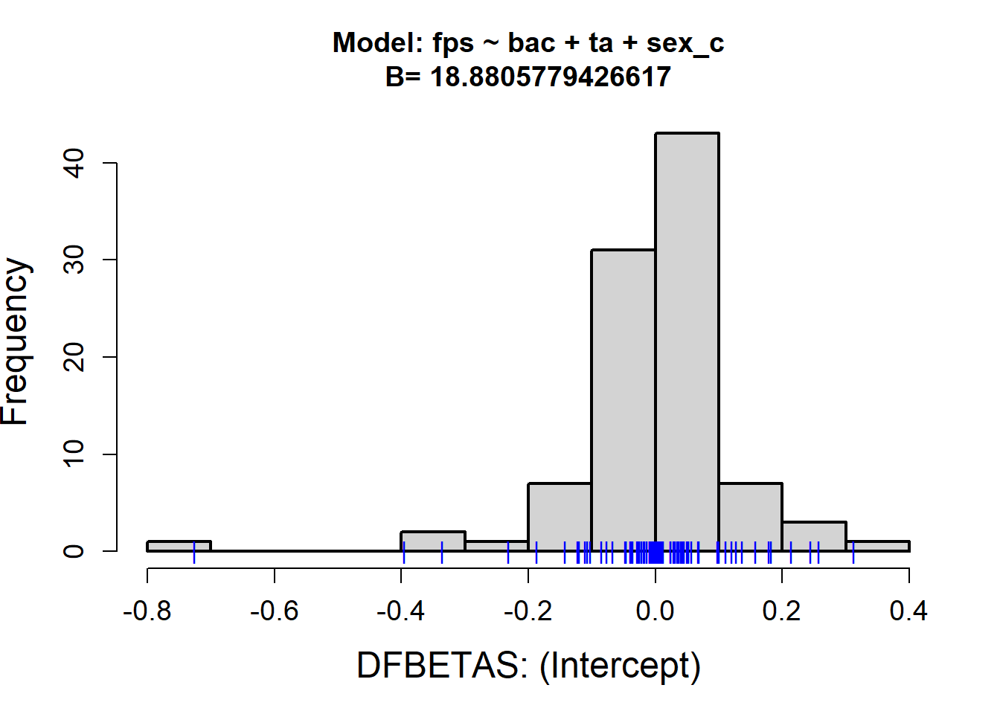
7.16 Regression Outlier (Real data)
Code
case_analysis(m_1, Type = "residuals")$Rownames
character(0)
$Values
named numeric(0)Code
car::outlierTest(m_1, cutoff = .05, labels = data$subid) rstudent unadjusted p-value Bonferroni p
0125 -4.307609 0.000041622 0.0039958
2112 3.765010 0.000294880 0.02830807.17 Influence (Cartoon data)
An observation is influential if it substantially alters the fitted regression model (i.e., the coefficients and/or intercept). Two commonly used assessment methods:
- Cooks distance
- dfBetas
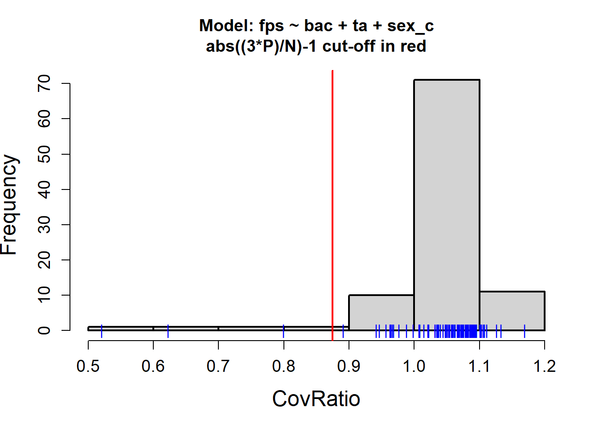
Question: Which point(s) have the most influence?
7.18 Cook’s Distance
Cook’s distance (\(\text{D}_i\)) provides a single summary statistic to index how much influence each score has on the overall model.
Cooks distance is based on both the outlierness (standardized residual) and leverage characteristics of the observation.
\(\text{D}_i = \frac{e'^2_i}{P} * \frac{h_i}{1-h_i}\)
\(\text{D}_i > \frac{4}{N-P}\) has been proposed as a very liberal cutoff (identifies a lot of influential points).
\(\text{D}_i > \text{qf}(.5, P, N-P)\) has also been employed as very conservative.
Identification of problematic scores should be considered in the context of the overall distribution of \(\text{D}_i\).
7.19 Cook’s Distance (Real data)
Code
case_analysis(m_1, Type = "cooksd")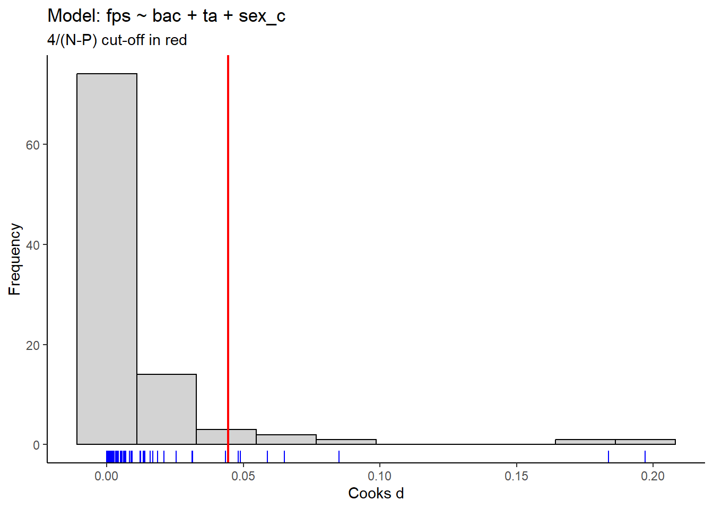
$Rownames
character(0)
$Values
named numeric(0)7.20 Influence Bubble Plot (Real data)
Code
case_analysis(m_1, Type = "influenceplot")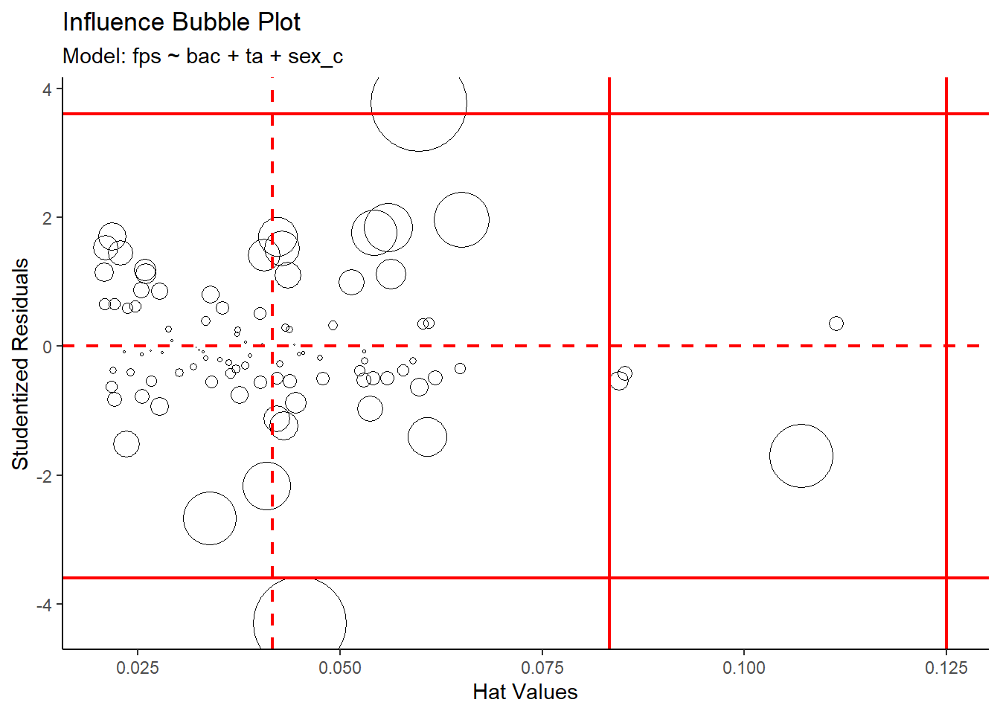
$Rownames
character(0)
$Values
numeric(0)Question: What are the expected effects of each of these points on the model?
7.21 dfBetas
\(\text{dfBeta}_{ij}\) is an index of how much each regression coefficient (\(j= 0 – k\)) would change if the \(i^{\text{th}}\) score was deleted.
\(\text{dfBeta}_{ij} = b_j - b_{j(-i)}\)
dfBetas (preferred) is the standardized form of the index.
\(\text{dfBetas} = \frac{\text{dfBeta}}{\text{SE}_{b_{j(-i)}}}\)
\(|{\text{dfBetas}}|>2\) may be problematic.
\(|{\text{dfBetas}}|> \frac{2}{\sqrt{N}}\) in larger samples (Belsley et al., 1980).
Consider distribution with histogram! Also can visualize with added variable plot.
Problem is there can be many dfBetas (a set for each predictor and intercept). Most helpful when there is one critical/focal effect.
7.22 dfBetas (Real data)
Code
case_analysis(m_1, Type = "dfbetas")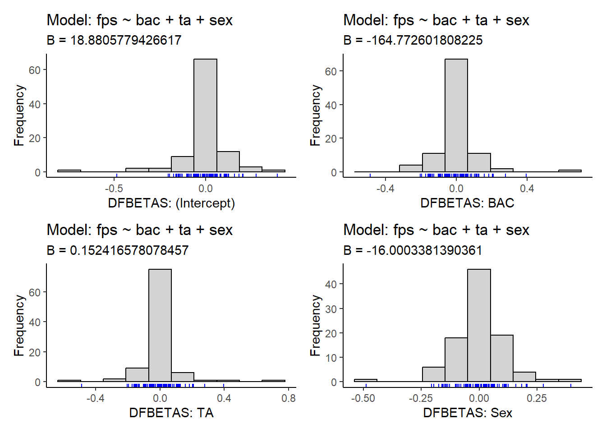
7.23 Added Variable Plot (Real data)
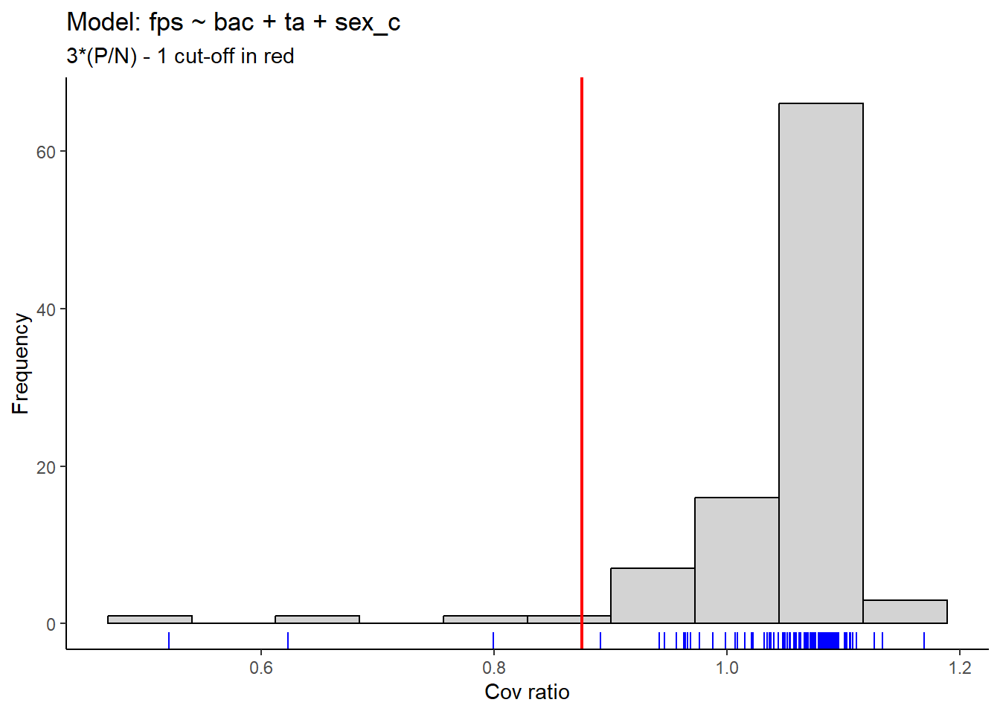
7.24 Impact on SEs
In addition to altering regression coefficients (and reducing \(R^2\)), problematic scores can increase the SEs (i.e., precision of estimation) of the regression coefficients.
COVRATIO is an index that indicates how individual scores affect the overall precision of estimation (joint confidence region for set of coefficients) of the regression coefficients.
Observations that decrease the precision of estimation have COVRATIOS < 1.0.
Belsley et al., (1980) proposed a cut off of:
\(\text{COVRATIO}_i < |3* \frac{P}{N} - 1|\)
7.25 Impact on SEs (Real data)
Code
case_analysis(m_1, Type = "covratio")$Rownames
character(0)
$Values
named numeric(0)7.26 Four Examples with Fake Data
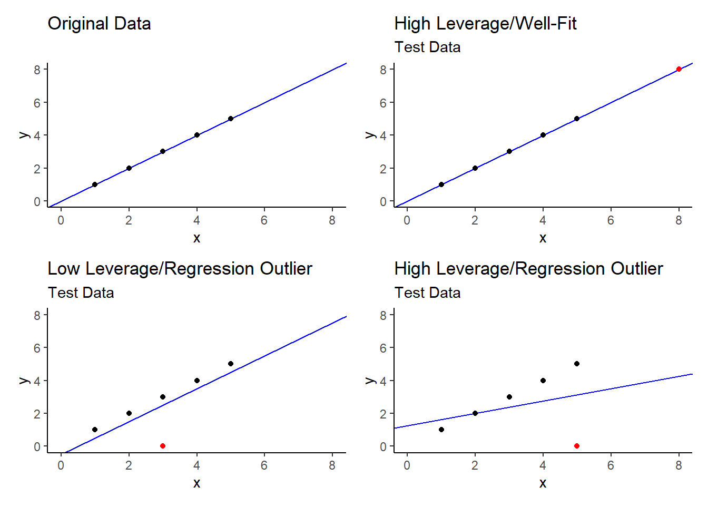
7.27 Enter the Real World
Question: So what do you do?
7.28 Overall Impact of Problem Scores: Real Data
Code
broom::tidy(m_1)# A tibble: 4 × 5
term estimate std.error statistic p.value
<chr> <dbl> <dbl> <dbl> <dbl>
1 (Intercept) 18.9 7.47 2.53 0.0132
2 bac -165. 84.6 -1.95 0.0545
3 ta 0.152 0.0316 4.82 0.00000570
4 sex_c -16.0 6.67 -2.40 0.0184 SSE = 97756.43
Code
data_rm_outliers <- data |>
filter(!subid %in% c("0125", "2112"))
m_2 <- lm(fps ~ bac + ta + sex_c, data = data_rm_outliers)
broom::tidy(m_2)# A tibble: 4 × 5
term estimate std.error statistic p.value
<chr> <dbl> <dbl> <dbl> <dbl>
1 (Intercept) 26.6 6.44 4.13 0.0000825
2 bac -229. 72.4 -3.16 0.00214
3 ta 0.126 0.0273 4.61 0.0000135
4 sex_c -15.5 5.70 -2.72 0.00790 SSE = 68262.98
7.29 What to Do
Don’t worry about leverage alone.
Worry about model outliers always.
Worry about influence (overall model or predictors by field).
Drop, retain, or bring model outliers to the fence.
Drop or retain influential participants.
Report both ways (in olden day…).
Get with the program and pre-register instead (what you worry about, how you define it, and what you do)!